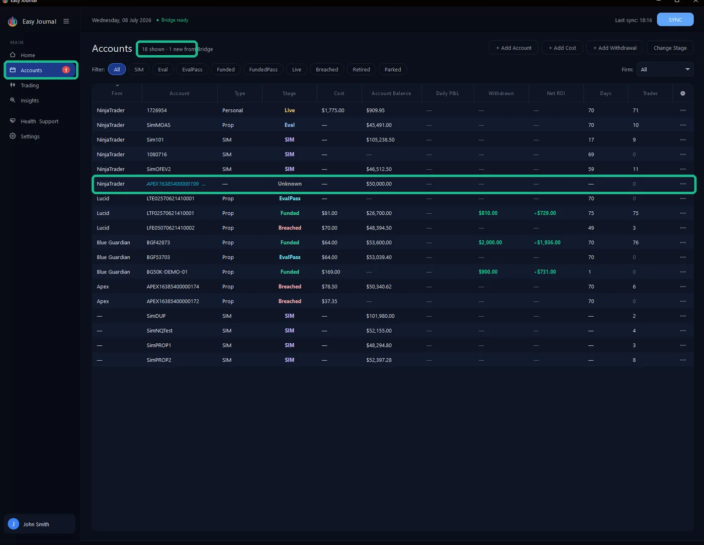
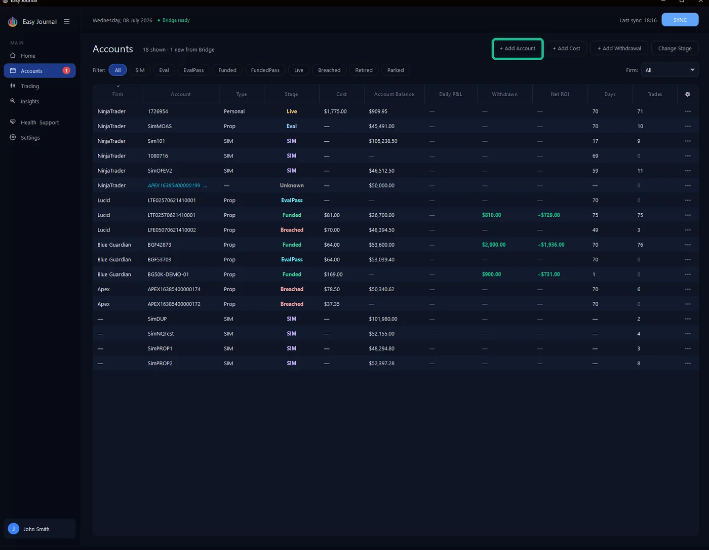
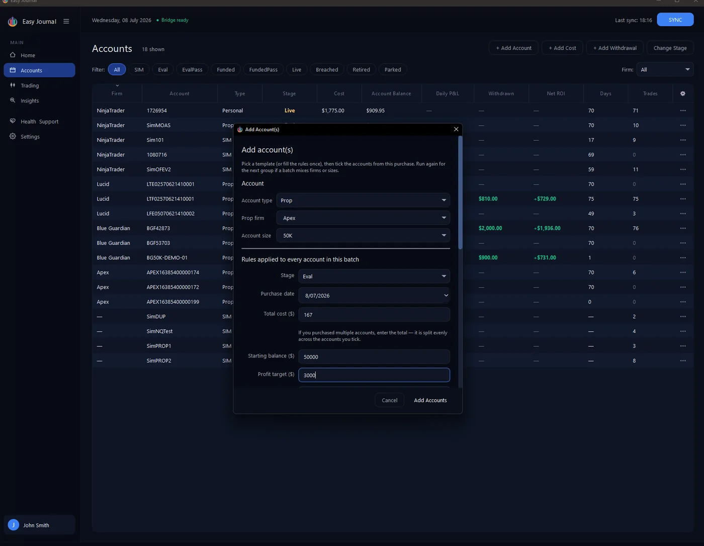
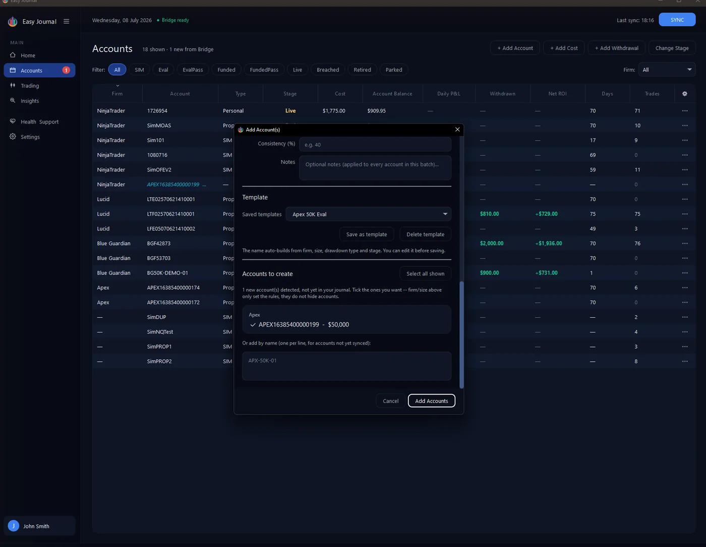

A new account appears by itself You rarely have to tell the Journal about a new account - NinjaTrader does. On the next SYNC after a new account exists in NinjaTrader, it appears in the Accounts list automatically, with its details from the platform and a cyan (new) tag in the Account column. Three cues fire at once: the tag on the row, a "1 new from Bridge" counter next to the title, and a badge on the Accounts item in the sidebar. (Home also shows a "new account detected" alert.)
After a sync - the new account arrives with its balance, tagged (new), counted in the header and badged in the sidebar.
One thing to know: until you claim it, the Firm column shows the NinjaTrader connection name (usually just "NinjaTrader") - the snapshot does not know which prop firm an account belongs to, because NinjaTrader itself does not. You set the real firm when you claim the account below; the Add Account window's firm grouping is only a best guess from the account name.
Claiming it A (new) account works already - balance and trades record - but it has no firm, stage, cost or rules yet. Claiming it takes a minute: 1. Click + Add Account at the top right.


2. Pick the Account type, Prop firm and Account size. If you have a saved template for that firm and size the rules fill themselves; otherwise type them once - purchase cost, starting balance, profit target, drawdown, daily loss limit - and click Save as template so next time is automatic. The template names itself (ours became "Apex 50K Eval").


3. Scroll to Accounts to create. The newly synced account is listed there, grouped under its best-guess firm with its balance - tick it.
Step 3 - the detected account, ticked and ready to claim.
4. Click Add Accounts. The result: the account moves into its firm's group at the stage you set, with its cost recorded - and the (new) tag, header counter and sidebar badge all clear:
